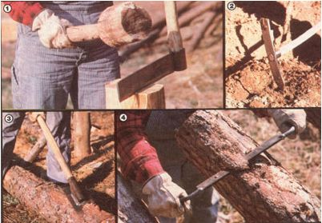

[1] A properly wielded froe can make fine splits. [2] Our home-wrought mattock is as good as the store-bought version. [3] The hark spud makes skinning a rata log a simple task. [4] This ""poor persons plane"" can shave a timber's ""skin"" or its ""meat"" with ease